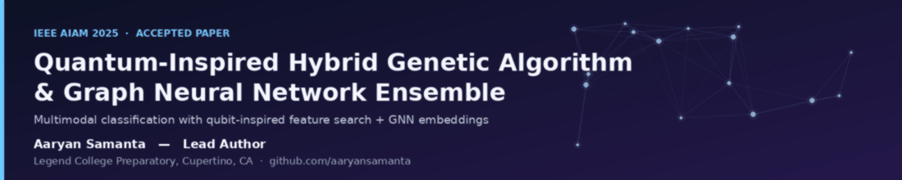

Explore the model. Interact with the ideas.
Three hands-on visualizations: feature selection, graph propagation, and learned-fusion concepts. Select a module and experiment below.
Probability-encoded feature selection
Each bar represents a feature's selection probability. Run a step to update probabilities toward an illustrative target mask, then sample a new chromosome. This is not the manuscript's trained optimizer.
Illustrative target mask: 1 0 1 1 0 1 0 1. Values are generated locally in your browser.
From features to relational learning
The architecture follows the paper and the implemented Python pipeline: train-only preprocessing, quantum-inspired feature search, feature graphs, GCN/GAT branches, and learned probability fusion.
Multimodal inputs
The proposed approach starts from heterogeneous features and potential relationships between samples or features.

Published research evaluation
Metric comparison transcribed from the current paper.tex, Table 1 (reported test split, n = 20). These are paper-reported scores, not results from the browser labs.
QIHGA–GNN leads the reported comparison
Explore the four evaluation metrics, then inspect how the confusion matrix connects to the scores.
20 held-out test cases
Click any cell to understand its contribution to the evaluation metrics.
Select a matrix cell to explore the outcome.
Accuracy
18 correct predictions out of 20 test cases.
All four metrics are reported as 90% in the paper. The interactive view explains the underlying measures without changing the published data.
Source: paper/paper.tex, Table 1. The paper labels its comparison rows “Baseline 1” and “Baseline 2”; no algorithm identities are assigned to those rows here. Reported QIHGA–GNN confusion matrix: TP 9 · FP 1 · TN 9 · FN 1.
Research figures, source code & paper
Browse the original research figures and the current GA–GNN Python implementation, organized with the same structure as the latest repository.

Aaryan Samanta · Research repository
The research repository includes the paper, experimental data, QIHGA search, GCN/GAT graph encoders, learned fusion, configuration examples, and tests.
Open original GitHub repository ↗Publication DOI ↗


Research manuscript
Architecture, methodology, experiments, evaluation and citations.
Read PDF ↗LaTeX source ↗QIHGA · GCN/GAT · Fusion
Source modules for evolutionary search, graph encoders, learned ensemble fusion, and experiment execution.
Search source ↗Graph model ↗Experiment CLI ↗Dataset, notebook & tests
Explore the supplied dataset, experiment notebook, configuration, automated tests, and installation instructions.
Dataset ↗Notebook ↗Setup guide ↗Tests ↗python -m pip install -e "./code[test]" from the repository root, provide a dataset with a binary target and a JSON modality map, and run aiam-gnn --help for experiment options. The included website is static and does not execute server-side Python.